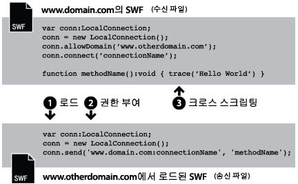
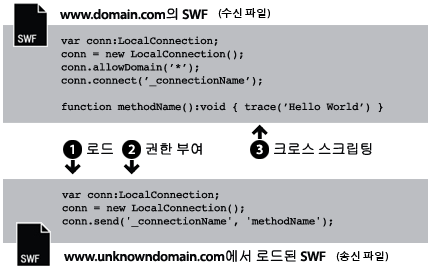
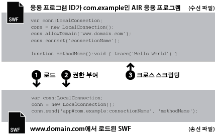
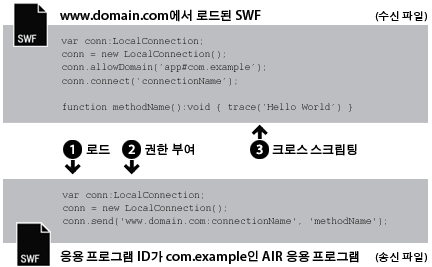
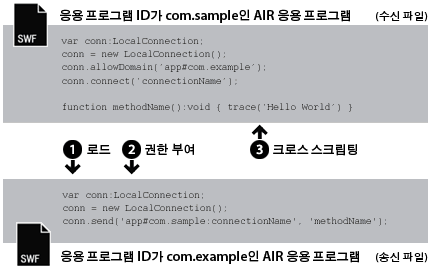

| 패키지 | flash.net |
| 클래스 | public class LocalConnection |
| 상속 | LocalConnection |
| 언어 버전: | ActionScript 3.0 |
| 런타임 버전: | AIR 1.0, Flash Player 9, Flash Lite 4 |
- 단일 SWF 파일 내
- 여러 개의 SWF 파일 간
- AIR 응용 프로그램의 내용(SWF 기반 또는 HTML 기반) 간
- AIR 응용 프로그램의 내용(SWF 기반 또는 HTML 기반)과 브라우저에서 실행 중인 SWF 내용 간
AIR 프로파일 지원: 이 기능은 모든 데스크톱 운영 체제 및 모든 AIR for TV 장치에서 지원되지만 휴대 장치에서는 지원되지 않습니다. LocalConnection.isSupported 속성을 사용하여 런타임에 지원을 테스트할 수 있습니다. 여러 프로파일 간 API 지원에 대한 자세한 내용은 AIR 프로파일 지원을 참조하십시오.
참고: AIR for TV 장치는 AIR 응용 프로그램에서 SWF 기반 내용 간에만 통신을 지원합니다.
로컬 연결은 fscommand() 또는 JavaScript를 사용하지 않고도 SWF 파일 간의 이런 종류의 연결이 가능하도록 합니다. LocalConnection 객체는 동일한 클라이언트 컴퓨터에서 실행되고 있는 파일 간에서만 통신할 수 있습니다. 그러나 이러한 파일은 서로 다른 응용 프로그램에서 실행될 수는 있습니다(예: 브라우저에서 실행 중인 파일과 Adobe AIR에서 실행 중인 SWF 파일).
ActionScript 3.0으로 만들어진 LocalConnection 객체는 ActionScript 1.0 또는 2.0으로 만들어진 LocalConnection 객체와 통신할 수 있습니다. 반대의 경우도 역시 마찬가지입니다. ActionScript 1.0 또는 2.0으로 만들어진 LocalConnection 객체는 ActionScript 3.0으로 만들어진 LocalConnection 객체와 통신할 수 있습니다. Flash Player는 다른 버전의 LocalConnection 객체 간의 통신을 자동으로 처리합니다.
LocalConnection 객체에 콜백 메서드를 추가하는 방법은 다음 세 가지입니다.
- LocalConnection 클래스를 하위 클래스로 사용하고 메서드 추가
-
LocalConnection.client속성을 이 메서드를 구현하는 객체로 설정 - LocalConnection을 확장하는 동적 클래스를 만들고 동적으로 메서드 추가
두 파일 간의 통신을 구현하기 위한 LocalConnection 객체 사용 방법을 이해하려면 각 파일에서 사용되는 명령을 식별해 두면 유용합니다. 호출될 메서드가 포함되어 있는 파일은 수신 파일이라고 합니다. 수신 파일에는 LocalConnection 객체와 connect() 메서드에 대한 호출이 포함되어 있어야 합니다. 다른 파일은 전송 파일이라고 하며, 메서드를 호출하는 파일입니다. 전송 파일에는 다른 LocalConnection 객체와 send() 메서드에 대한 호출이 포함되어 있어야 합니다.
파일이 동일한 도메인이 있는지, 예측 가능한 도메인 이름을 사용하는 다른 도메인에 있는지 아니면 예측이 불가능하거나 동적 도메인 이름을 사용하는 도메인에 있는지에 따라 send() 및 connect()의 사용이 달라집니다. 다음 단락에서는 각각의 코드 샘플과 함께 세 가지 다른 상황에 대해 설명합니다.
동일한 도메인의 경우. LocalConnection 객체를 사용하는 가장 간단한 방법은 동일한 도메인 내의 통신은 기본적으로 허용되므로 동일한 도메인에 있는 LocalConnection 객체 간의 통신만을 허용하는 것입니다. 동일한 도메인 내의 두 파일이 통신할 때 특별한 보안 조치를 구현할 필요가 없으며, connect() 및 send() 메서드에 대해 동일한 값의 connectionName 매개 변수를 전달하면 됩니다.

// receivingLC is in http://www.domain.com/receiving.swf
receivingLC.connect('myConnection');
// sendingLC is in http://www.domain.com/sending.swf
// myMethod() is defined in sending.swf
sendingLC.send('myConnection', 'myMethod');
예측 가능한 도메인 이름을 사용하는 다른 도메인의 경우. 다른 도메인의 두 SWF 파일이 통신하는 경우 allowDomain() 메서드를 호출하여 두 도메인 간의 통신을 허용해야 합니다. 또한 send() 메서드의 연결 이름을 수신 LocalConnection 객체의 도메인 이름으로 지정해야 합니다.

// receivingLC is in http://www.domain.com/receiving.swf
receivingLC.allowDomain('www.anotherdomain.com');
receivingLC.connect('myConnection');
// sendingLC is in http://www.anotherdomain.com/sending.swf
sendingLC.send('www.domain.com:myConnection', 'myMethod');
예측 불가능한 도메인 이름을 사용하는 다른 도메인의 경우. 때때로 수신 LocalConnection 객체의 파일을 도메인 간에 보다 자유롭게 이동할 수 있도록 설정해야 할 경우가 있습니다. send() 메서드에 도메인 이름을 지정하지 않고 수신 및 송신 LocalConnection 객체가 동일한 도메인에 있지 않다는 것을 나타내려면 connect() 및 send() 호출 모두에서 연결 이름 앞에 밑줄(_)을 붙입니다. 두 도메인 간의 통신을 허용하려면 allowDomain() 메서드를 호출하고 LocalConnection 호출을 허용하려는 도메인을 전달합니다. 또한 모든 도메인에서의 호출을 허용하려면 와일드카드(*) 인수를 전달합니다.

// receivingLC is in http://www.domain.com/receiving.swf
receivingLC.allowDomain('*');
receivingLC.connect('_myConnection');
// sendingLC is in http://www.anotherdomain.com/sending.swf
sendingLC.send('_myConnection', 'myMethod');
Flash Player에서 AIR 응용 프로그램으로 연결. AIR 응용 프로그램 샌드박스에서 만든 LocalConnection 객체는 연결 접두어로 도메인 이름 대신 특수 문자열을 사용합니다. 이 문자열은 app#appID.pubID의 형식으로 되어 있으며, 여기서 appID는 응용 프로그램 ID이고 pubID는 응용 프로그램의 제작자 ID입니다. AIR 응용 프로그램에서 제작자 ID를 사용하는 경우에는 제작자 ID만 포함합니다. 예를 들어 AIR 응용 프로그램에 "com.example"이라는 응용 프로그램 ID가 있지만 제작자 ID는 없는 경우 로컬 연결 문자열로 app#com.example:myConnection을 사용하면 됩니다. 또한 AIR 응용 프로그램은 SWF 파일의 원본 도메인 호출에서 다음을 전달하여 allowDomain() 메서드를 호출해야 합니다.

// receivingLC is an AIR application with app ID = com.example (and no publisher ID)
receivingLC.allowDomain('www.domain.com');
receivingLC.connect('myConnection');
// sendingLC is in http://www.domain.com/sending.swf
sendingLC.send('app#com.example:myConnection', 'myMethod');
참고: AIR 응용 프로그램에서 AIR 응용 프로그램 샌드박스 외부의 SWF를 로드하는 경우 해당 SWF와의 로컬 연결을 설정하는 규칙은 Flash Player에서 실행 중인 SWF 파일과의 연결을 설정하는 규칙과 동일합니다.
AIR 응용 프로그램에서 Flash Player로 연결. AIR 응용 프로그램이 Flash Player 런타임에서 실행 중인 SWF와 통신하는 경우 allowDomain() 메서드를 호출하고 AIR 응용 프로그램의 연결 접두어로 전달하여 둘 사이의 통신을 허용해야 합니다. 예를 들어 AIR 응용 프로그램의 응용 프로그램 ID가 "com.example"이고 제작자 ID는 없는 경우 문자열 app#com.example을 allowDomain() 메서드로 전달할 수 있습니다. 또한 수신하는 LocalConnection 객체의 도메인 이름을 사용하여 send() 메서드에 연결 이름을 지정해야 합니다(로컬 파일 시스템에서 로드된 SWF 파일에 대해 도메인 이름으로 "localhost" 사용).

// receivingLC is in http://www.domain.com/receiving.swf
receivingLC.allowDomain('app#com.example');
receivingLC.connect('myConnection');
// sendingLC is an AIR application with app ID = com.example (and no publisher ID)
sendingLC.send('www.domain.com:myConnection', 'myMethod');
한 AIR 응용 프로그램에서 다른 AIR 응용 프로그램으로. 두 AIR 응용 프로그램 사이에서 통신하려면 allowDomain() 메서드를 호출하고 전송하는 AIR 응용 프로그램의 연결 접두어로 전달하여 둘 사이의 통신을 허용해야 합니다. 예를 들어 전송하는 응용 프로그램의 응용 프로그램 ID가 "com.example"이고 제작자 ID는 없는 경우 문자열 app#com.example을 수신하는 응용 프로그램의 allowDomain() 메서드로 전달할 수 있습니다. 또한 수신하는 LocalConnection 객체의 연결 접두어를 사용하여 send() 메서드에 연결 이름을 지정해야 합니다.

// receivingLC is an AIR application with app ID = com.sample (and no publisher ID)
receivingLC.allowDomain('app#com.example');
receivingLC.connect('myConnection');
// sendingLC is an AIR application with app ID = com.example (and no publisher ID)
sendingLC.send('app#com.sample:myConnection', 'myMethod');
LocalConnection 객체를 사용하여 단일 파일 내의 데이트를 송신하고 수신할 수 있으나 이것은 일반적인 구현 방식은 아닙니다.
send() 및 connect() 메서드에 대한 자세한 내용은 LocalConnection.send() 및 LocalConnection.connect() 항목의 connectionName 매개 변수 설명을 참조하십시오. 또한 allowDomain() 및 domain 항목을 참조하십시오.
관련 API 요소
flash.net.LocalConnection.allowDomain()
flash.net.LocalConnection.domain
 상속되는 공용 속성 숨기기
상속되는 공용 속성 숨기기 상속되는 공용 속성 표시
상속되는 공용 속성 표시| 속성 | 정의 주체 | ||
|---|---|---|---|
| client : Object
콜백 메서드가 호출되는 객체를 나타냅니다. | LocalConnection | ||
 | constructor : Object
지정된 객체 인스턴스의 클래스 객체 또는 생성자 함수에 대한 참조입니다. | Object | |
| domain : String [읽기 전용]
현재 파일의 위치 도메인을 표시하는 문자열입니다. | LocalConnection | ||
| isPerUser : Boolean
LocalConnection 객체가 현재 사용자에게 범위가 지정되어 있거나(true) 컴퓨터의 모든 사용자가 전역적으로 액세스할 수 있는지(false) 여부를 나타냅니다. | LocalConnection | ||
| isSupported : Boolean [정적] [읽기 전용]
현재 플랫폼에서 LocalConnection 클래스가 지원되면 isSupported 속성이 true로 설정되고, 그렇지 않으면 false로 설정됩니다. | LocalConnection | ||
| 메서드 | 정의 주체 | ||
|---|---|---|---|
LocalConnection 객체를 만듭니다. | LocalConnection | ||
| addEventListener(type:String, listener:Function, useCapture:Boolean = false, priority:int = 0, useWeakReference:Boolean = false):void
리스너에서 이벤트 알림을 받을 수 있도록 EventDispatcher 객체에 이벤트 리스너 객체를 등록합니다. | EventDispatcher | |
이 LocalConnection 인스턴스로 LocalConnection 호출을 보낼 수 있는 도메인을 하나 이상 지정합니다. | LocalConnection | ||
이 LocalConnection 객체로 LocalConnection 호출을 보낼 수 있는 도메인을 하나 이상 지정합니다. | LocalConnection | ||
LocalConnection 객체를 닫습니다. 즉, 연결을 끊습니다. | LocalConnection | ||
send() 명령(전송 LocalConnection 객체)에서 전송한 명령을 수신할 수 있도록 LocalConnection 객체를 준비합니다. | LocalConnection | ||
|
이벤트를 이벤트 흐름으로 전달합니다. | EventDispatcher | |
|
EventDispatcher 객체에 특정 유형의 이벤트에 대한 리스너가 등록되어 있는지 여부를 확인합니다. | EventDispatcher | |
|
지정된 속성이 객체에 정의되어 있는지 여부를 나타냅니다. | Object | |
|
Object 클래스의 인스턴스가 매개 변수로 지정된 객체의 프로토타입 체인에 있는지 여부를 나타냅니다. | Object | |
|
지정된 속성이 존재하고 열거 가능한지 여부를 나타냅니다. | Object | |
|
EventDispatcher 객체에서 리스너를 제거합니다. | EventDispatcher | |
connect(connectionName) 메서드(수신 LocalConnection 객체)를 사용하여 열린 연결에서 methodName 메서드를 호출합니다. | LocalConnection | ||
|
루프 작업에서 동적 속성을 사용할 수 있는지 여부를 설정합니다. | Object | |
|
로캘별 규칙에 따라 서식이 지정된 이 객체의 문자열 표현을 반환합니다. | Object | |
|
지정된 객체의 문자열 표현을 반환합니다. | Object | |
|
지정된 객체의 프리미티브 값을 반환합니다. | Object | |
|
이 EventDispatcher 객체 또는 조상 객체에 지정한 이벤트 유형에 대한 이벤트 리스너가 등록되어 있는지 여부를 확인합니다. | EventDispatcher | |
| 이벤트 | 요약 | 정의 주체 | ||
|---|---|---|---|---|
| [브로드캐스트 이벤트] Flash Player 또는 AIR 응용 프로그램이 운영 체제 포커스를 얻어 활성화될 때 전달됩니다. | EventDispatcher | ||
| 기본 비동기 코드에서 비동기적으로 예외가 발생할 때 전달됩니다. | LocalConnection | |||
| [브로드캐스트 이벤트] Flash Player 또는 AIR 응용 프로그램이 운영 체제 포커스를 잃고 비활성화될 때 전달됩니다. | EventDispatcher | ||
| LocalConnection.send() 호출로 다른 보안 샌드박스에 데이터를 보내려고 할 때 전달됩니다. | LocalConnection | |||
| LocalConnection 객체가 상태를 보고할 때 전달됩니다. | LocalConnection | |||
client | 속성 |
client:Object| 언어 버전: | ActionScript 3.0 |
| 런타임 버전: | AIR 1.0, Flash Player 9, Flash Lite 4 |
콜백 메서드가 호출되는 객체를 나타냅니다. 기본 객체는 생성 중인 로컬 연결인 this입니다. client 속성을 다른 객체로 설정하여, 이 객체에서 콜백 메서드를 호출할 수도 있습니다.
구현
public function get client():Object public function set client(value:Object):void오류
TypeError — client 속성은 null이 아닌 객체로 설정해야 합니다.
|
domain | 속성 |
domain:String [읽기 전용] | 언어 버전: | ActionScript 3.0 |
| 런타임 버전: | AIR 1.0, Flash Player 9, Flash Lite 4 |
현재 파일의 위치 도메인을 표시하는 문자열입니다.
Adobe AIR의 응용 프로그램 보안 샌드박스에서 실행 중인 내용(AIR 응용 프로그램과 함께 설치된 내용)에서 런타임은 수퍼 도메인 대신 AIR 응용 프로그램의 응용 프로그램 ID(응용 프로그램 설명자 파일에 정의됨)가 뒤에 붙는 문자열 app#을 사용합니다. 예를 들어 응용 프로그램 ID가 com.example.air.MyApp connectionName인 응용 프로그램의 connectionName은 "app#com.example.air.MyApp:connectionName"으로 해석됩니다.
Flash Player 9 이상용으로 제작된 SWF 파일에서, 반환된 문자열은 하위 도메인을 포함하여 파일의 정확한 도메인입니다. 예를 들어 현재 파일이 www.adobe.com/kr에 있으면 이 명령은 "www.adobe.com/kr"을 반환합니다.
현재 파일이 Flash Player가 실행 중인 클라이언트 컴퓨터에 있는 로컬 파일이면 이 명령은 "localhost"를 반환합니다.
이 속성을 사용하는 가장 일반적인 방법은 송신 LocalConnection 객체의 도메인 이름을 수신 LocalConnection 객체에서 호출할 메서드에 매개 변수로 포함시키거나 LocalConnection.allowDomain()과 연결하여 지정된 도메인에서 명령을 승인하도록 하는 것입니다. 동일한 도메인 내에 있는 LocalConnection 객체 간의 통신만 가능하게 하면 이 속성을 사용할 필요가 없습니다.
구현
public function get domain():String관련 API 요소
isPerUser | 속성 |
isPerUser:Boolean| 언어 버전: | ActionScript 3.0 |
| 런타임 버전: | Flash Player 10.0.32, AIR 1.5.2 |
LocalConnection 객체가 현재 사용자에게 범위가 지정되어 있거나(true) 컴퓨터의 모든 사용자가 전역적으로 액세스할 수 있는지(false) 여부를 나타냅니다. 이 속성은 Mac OS X를 실행 중인 내용에만 영향을 줍니다. 기타 플랫폼은 이 매개 변수를 무시합니다. Windows 및 Linux 운영 체제에서의 연결은 항상 사용자별로 수행됩니다.
Flash Player 10.0.22 이하 및 AIR 1.5.1 이하에서 Mac OS X의 모든 LocalConnection 객체에는 전역 범위가 있습니다. 이전 버전과의 호환성을 유지할 필요가 없는 경우 이 속성을 항상 true로 설정합니다. 이후 릴리스에서 이 속성의 기본 값은 true로 변경될 수 있습니다.
기본값: false.
구현
public function get isPerUser():Boolean public function set isPerUser(value:Boolean):voidisSupported | 속성 |
LocalConnection | () | 생성자 |
public function LocalConnection()| 언어 버전: | ActionScript 3.0 |
| 런타임 버전: | AIR 1.0, Flash Player 9, Flash Lite 4 |
LocalConnection 객체를 만듭니다. LocalConnection 객체를 사용하여 동일한 클라이언트 시스템에서 실행 중인 다른 파일 간의 통신을 가능하게 할 수 있습니다.
관련 API 요소
allowDomain | () | 메서드 |
public function allowDomain(... domains):void| 언어 버전: | ActionScript 3.0 |
| 런타임 버전: | AIR 1.0, Flash Player 9, Flash Lite 4 |
이 LocalConnection 인스턴스로 LocalConnection 호출을 보낼 수 있는 도메인을 하나 이상 지정합니다.
이 메서드를 사용하면 보안 프로토콜(HTTPS)을 통해 호스팅되는 파일을 비보안 프로토콜에서 호스팅되는 파일에서 액세스할 수 없습니다. 대신 allowInsecureDomain() 메서드를 사용해야 합니다.
이 메서드를 사용하면 자식 파일을 가져올 최종 도메인을 몰라도 다른 도메인의 자식 파일이 부모 파일에 대해 LocalConnection을 호출할 수 있도록 할 수 있습니다. 로드 균형 조정 리디렉션이나 타사 서버를 사용하는 경우 이러한 상황이 발생할 수 있습니다. 이러한 경우에는 로드에 사용된 LoaderInfo 객체의 url 속성을 사용하여 allowDomain() 메서드에 사용할 도메인을 알아낼 수 있습니다. 예를 들어 Loader 객체를 사용하여 자식 파일을 로드하는 경우 파일이 로드되면 Loader 객체의 contentLoaderInfo.url 속성을 확인하고 전체 URL 문자열에서 도메인을 파싱할 수 있습니다. 이렇게 할 경우에는 파일이 로드될 때까지 기다립니다. 이는 파일이 완전히 로드될 때까지 contentLoaderInfo.url 속성에 올바른 최종 값이 없기 때문입니다.
이와 반대의 상황이 발생할 수도 있습니다. 즉, 부모로부터 LocalConnection 호출을 받는 자식 파일을 만들려고 하지만 부모의 도메인을 모를 수 있습니다. 이러한 경우에는 로드된 파일에서 도메인 인수가 loaderInfo.url 속성의 도메인과 일치하는지 확인하여 이 메서드를 구현합니다. 앞에서와 마찬가지로 loaderInfo.url의 전체 URL에서 도메인을 파싱해야 합니다. 자식이 로드될 때 부모가 이미 로드되었기 때문에 이러한 상황에서는 부모 파일이 로드될 때까지 기다릴 필요가 없습니다.
이 메서드를 사용할 경우 다음과 같은 Flash Player 보안 모델을 생각해 볼 수 있습니다. 기본적으로 LocalConnection 객체는 해당 객체를 만든 파일의 샌드박스와 연관되어 있으며, 수신 파일에서 LocalConnection.allowDomain() 메서드를 호출하지 않는 한 LocalConnection 객체에 대한 크로스 도메인 호출은 허용되지 않습니다. 그러나 Adobe AIR에서 application 보안 샌드박스의 내용, 즉 AIR 응용 프로그램과 함께 설치되는 내용은 이러한 보안 제한에 의해 제한되지 않습니다.
보안에 대한 자세한 내용은 Flash Player 개발자 센터 항목: 보안을 참조하십시오.
참고: allowDomain() 메서드는 ActionScript 1.0 및 2.0에서와는 다르게 형식이 변경되었습니다. 이전 버전에서 allowDomain은 구현되는 콜백 메서드였습니다. ActionScript 3.0에서 allowDomain()은 호출되는 LocalConnection의 내장 메서드입니다. 이러한 변경으로 인해 allowDomain()은 flash.system.Security.allowDomain()과 거의 동일한 방식으로 작동됩니다.
매개 변수
... domains — LocalConnection 호출을 허용할 도메인의 이름을 지정하는 하나 이상의 문자열입니다. 이 매개 변수는 다음과 같은 두 가지 특별한 경우를 가지고 있습니다.
|
오류
ArgumentError — 지정된 모든 매개 변수는 null이 아닌 문자열이어야 합니다.
|
관련 API 요소
allowInsecureDomain | () | 메서드 |
public function allowInsecureDomain(... domains):void| 언어 버전: | ActionScript 3.0 |
| 런타임 버전: | AIR 1.0, Flash Player 9, Flash Lite 4 |
이 LocalConnection 객체로 LocalConnection 호출을 보낼 수 있는 도메인을 하나 이상 지정합니다.
allowInsecureDomain() 메서드는 allowDomain() 메서드와 유사한 방식으로 작동합니다. 단 한 가지 차이점은 allowInsecureDomain() 메서드가 비 HTTPS 기반 파일에서 HTTPS 기반 SWF 파일로 LocalConnection 호출을 전송하도록 허용한다는 점입니다. 이 차이는 HTTPS를 사용하여 로드된 파일에서 allowInsecureDomain() 메서드를 호출하는 경우에만 의미가 있습니다. 동일한 도메인 내에서 비 HTTPS/HTTPS 경계를 교차하더라도 allowInsecureDomain() 메서드를 호출해야 합니다. 기본적으로, 동일한 도메인 내에 있더라도 비 HTTPS 파일에서 HTTPS 파일로 LocalConnection을 호출할 수 없습니다.
allowInsecureDomain() 호출은 HTTPS에서 제공하는 보안 기능을 저해할 수 있으므로 사용하지 않는 것이 좋습니다. HTTPS를 통해 파일을 로드하는 경우 네트워크를 통해 전달되는 동안 파일이 변경되지 않을 것이라는 것을 어느 정도 신뢰할 수 있습니다. 그런데 만일 비 HTTPS 파일이 HTTPS 파일에 대한 LocalConnection 호출을 할 수 있도록 허용하는 경우, 전달 도중 사실상 부당하게 변경될 수 있는 파일로부터의 호출을 승인하는 것입니다. 이것은 일반적으로 HTTPS 파일에 도착하는 LocalConnection 호출의 신뢰성을 믿을 수 없기 때문에 추가적인 경계를 필요로 합니다.
기본적으로 HTTPS 프로토콜을 통하여 호스팅되는 파일은 HTTPS 프로토콜을 통하여 호스팅되는 다른 파일에서만 액세스할 수 있습니다. 이러한 구현 방법은 HTTPS 프로토콜이 제공하는 무결성을 유지합니다.
이 방법을 사용하여 기본 비헤이비어를 재정의하는 것은 HTTPS 보안 기능을 저해할 수 있으므로 사용하지 않는 것이 좋습니다. 그러나 Flash Player 6 또는 이전 버전용으로 제작된 HTTP SWF 파일에서 Flash Player 9 이상용으로 제작된 HTTPS SWF 파일에 액세스를 허용해야 하는 경우 등에는 이 방법을 사용하는 것이 좋습니다.
보안에 대한 자세한 내용은 Flash Player 개발자 센터 항목: 보안을 참조하십시오.
매개 변수
... domains — LocalConnection 호출을 허용할 도메인의 이름을 지정하는 하나 이상의 문자열입니다. 이 매개 변수에는 다음과 같은 두 가지 특별한 경우가 있습니다.
|
오류
ArgumentError — 지정된 모든 매개 변수는 null이 아닌 문자열이어야 합니다.
|
관련 API 요소
close | () | 메서드 |
public function close():void| 언어 버전: | ActionScript 3.0 |
| 런타임 버전: | AIR 1.0, Flash Player 9, Flash Lite 4 |
LocalConnection 객체를 닫습니다. 즉, 연결을 끊습니다. 더 이상 객체가 명령을 받지 않도록 할 때 이 명령을 실행합니다. 예를 들어 다른 SWF 파일에서 같은 connectionName 매개 변수를 사용하여 connect() 명령을 실행하려는 경우 이 명령을 사용합니다.
오류
ArgumentError — LocalConnection 인스턴스가 연결되어 있지 않아 닫을 수 없습니다.
|
관련 API 요소
connect | () | 메서드 |
public function connect(connectionName:String):void| 언어 버전: | ActionScript 3.0 |
| 런타임 버전: | AIR 1.0, Flash Player 9, Flash Lite 4 |
send()명령(전송 LocalConnection 객체)에서 전송한 명령을 수신할 수 있도록 LocalConnection 객체를 준비합니다. connect() 명령과 함께 사용된 객체를 수신 LocalConnection 객체라고 합니다. 송신 및 수신 객체는 동일한 클라이언트 시스템에서 실행되고 있어야 합니다.
경쟁 조건이 발생하지 않도록 하려면 LocalConnection 클래스 예제에서와 같이 이 메서드를 호출하기 전에 수신 LocalConnection 객체에 첨부된 메서드를 정의합니다.
기본적으로 connectionName 인수는 "superdomain:connectionName"의 값으로 해석됩니다. 여기서 superdomain은 connect() 명령이 포함된 파일의 수퍼 도메인입니다. 예를 들어 수신 LocalConnection 객체가 포함된 파일이 www.someDomain.com에 있으면 connectionName은 "someDomain.com:connectionName"으로 해석됩니다. Flash Player에서 실행 중인 파일이 클라이언트 컴퓨터에 있는 경우 superdomain에 할당된 값은 "localhost"입니다.
Adobe AIR의 응용 프로그램 보안 샌드박스에서 실행 중인 내용(AIR 응용 프로그램과 함께 설치된 내용)에서 런타임은 수퍼 도메인 대신 AIR 응용 프로그램의 응용 프로그램 ID(응용 프로그램 설명자 파일에 정의됨)가 뒤에 붙는 문자열 app#을 사용합니다. 예를 들어 응용 프로그램 ID가 com.example.air.MyApp connectionName인 응용 프로그램의 connectionName은 "app#com.example.air.MyApp:connectionName"으로 해석됩니다.
또한 기본적으로 Flash Player에서 수신 LocalConnection 객체는 연결 이름도 "superdomain:connectionName" 값으로 해석되는 송신 LocalConnection 객체의 명령만 허용할 수 있습니다. 이러한 방법을 사용하면 동일한 도메인에 존재하는 여러 파일들이 매우 간단하게 서로 통신 가능하도록 할 수 있습니다.
같은 도메인의 파일 사이에서만 통신을 구현하려는 경우 connectionName에 밑줄(_)로 시작하지 않고 도메인 이름(예: "myDomain:connectionName")을 지정하지 않는 문자열을 지정합니다. connect(connectionName) 메서드에서와 같은 문자열을 사용합니다.
다른 도메인의 파일 간에 통신을 구현하는 경우 밑줄(_)로 시작하는 connectionName의 문자열을 지정하면 수신 LocalConnection 객체가 있는 파일이 도메인 간에 더 쉽게 이동할 수 있습니다. 다음과 같은 두 가지 경우가 가능합니다.
connectionName의 문자열이 밑줄(_)로 시작하지 않을 경우 수퍼 도메인과 콜론이 포함된 접두어(예:"myDomain:connectionName")가 추가됩니다. 이렇게 하면 이름이 같은 다른 도메인의 연결과 충돌하지 않지만 모든 송신 LocalConnection 객체는 이 수퍼 도메인(예:"myDomain:connectionName")을 지정해야 합니다. 수신 LocalConnection 객체가 있는 파일이 다른 도메인으로 이동하면 Player에서 새 수퍼 도메인이 반영되도록 접두어를 변경합니다(예:"anotherDomain:connectionName"). 모든 송신 LocalConnection 객체를 수동으로 편집하여 새 수퍼 도메인을 가리켜야 합니다.connectionName의 문자열이 밑줄로 시작하면(예:"_connectionName") 접두어가 문자열에 추가되지 않습니다. 즉, 수신 및 송신 LocalConnection 객체가connectionName에 동일한 문자열을 사용한다는 것을 의미합니다. 수신 객체에서allowDomain()을 사용하여 모든 도메인의 연결을 승인하도록 지정할 경우 송신 LocalConnection 객체를 변경하지 않고 수신 LocalConnection 객체가 있는 파일을 다른 도메인으로 이동할 수 있습니다.
자세한 내용은 클래스 개요의 내용과 send()의 connectionName, allowDomain() 및 domain 항목에 대한 설명을 참조하십시오.
참고: 콜론은 수퍼 도메인을 connectionName 문자열과 구분하는 특수 문자로 사용됩니다. connectionName의 문자열에는 콜론이 포함될 수 없습니다.
이 메서드를 사용할 때는 다음과 같은 Flash Player 보안 모델을 고려해야 합니다. 기본적으로 LocalConnection 객체는 해당 객체를 만든 파일의 샌드박스와 연관되어 있으며, 수신 파일에서 LocalConnection.allowDomain() 메서드를 호출하지 않는 한 LocalConnection 객체에 대한 크로스 도메인 호출은 허용되지 않습니다. 내용을 포함하는 HTML 페이지에서 object 및 embed 태그의 allowNetworking 매개 변수를 설정하여 SWF 파일에서 이 메서드를 사용하지 못하도록 할 수 있습니다.그러나 Adobe AIR에서 application 보안 샌드박스의 내용 즉 AIR 응용 프로그램과 함께 설치된 내용은 이러한 보안 제한의 제약을 받지 않습니다.
보안에 대한 자세한 내용은 Flash Player 개발자 센터 항목: 보안을 참조하십시오.
매개 변수
connectionName:String — 수신 LocalConnection 객체와 통신하려는 send() 명령에 지정된 연결 이름에 해당하는 문자열입니다.
|
오류
TypeError — connectionName 매개 변수에 전달된 값은 null이 아니어야 합니다.
| |
ArgumentError — 이 오류는 다음과 같은 세 가지 이유로 발생할 수 있습니다. 1) connectionName에 전달된 문자열 값이 null입니다. null이 아닌 값을 전달합니다. 2) connectionName 매개 변수에 전달된 값에 콜론(:)이 포함되어 있습니다. 콜론은 send() 메서드에서 수퍼 도메인을 connectionName 문자열과 구분하기 위해 사용하는 특수 문자로, connect() 메서드에서는 사용되지 않습니다. 3) LocalConnection 인스턴스가 이미 연결되어 있습니다.
|
관련 API 요소
send | () | 메서드 |
public function send(connectionName:String, methodName:String, ... arguments):void| 언어 버전: | ActionScript 3.0 |
| 런타임 버전: | AIR 1.0, Flash Player 9, Flash Lite 4 |
connect(connectionName) 메서드(수신 LocalConnection 객체)를 사용하여 열린 연결에서 methodName 메서드를 호출합니다. send() 명령과 함께 사용된 객체를 전송 LocalConnection 객체라고 합니다. 송신 및 수신 객체가 포함된 SWF 파일은 동일한 클라이언트 시스템에서 실행되어야 합니다.
이 명령에 매개 변수로 전달할 수 있는 데이터의 크기는 40킬로바이트로 제한됩니다. send()가 ArgumentError를 반환하지만 사용하는 구문이 올바른 경우에는 send() 요청을 각각 40KB 데이터 이하로 된 여러 명령으로 분리해 봅니다.
connect() 항목에서 설명한 것처럼 기본적으로 connectionName에 현재의 수퍼 도메인이 추가됩니다. 서로 다른 도메인 간의 통신을 구현하는 경우에는 connectionName에 현재의 수퍼 도메인이 추가되지 않는 방식으로 송신 및 수신 LocalConnection 객체 모두에 connectionName을 정의해야 합니다. 다음 두 가지 방법 중 하나로 이 작업을 수행할 수 있습니다.
- 송신 및 수신 LocalConnection 객체 모두에서
connectionName의 시작 부분에 밑줄(_)을 사용합니다. 수신 객체가 포함된 파일에서LocalConnection.allowDomain()을 사용하여 모든 도메인으로부터의 연결을 승인하도록 지정합니다. 이와 같이 구현하면 모든 도메인에 송신 및 수신 파일을 저장할 수 있습니다. - 송신 LocalConnection 객체에서
connectionName에 수퍼 도메인을 포함시킵니다(예:myDomain.com:myConnectionName). 수신 객체에서LocalConnection.allowDomain()을 사용하여 지정된 수퍼 도메인(이 경우에는 myDomain.com)이나 모든 도메인에서의 연결을 승인하도록 지정합니다.
참고: 수신 LocalConnection 객체에서 connectionName에 수퍼 도메인을 지정할 수 없습니다. 송신 LocalConnection 객체에서만 가능합니다.
이 메서드를 사용할 때는 다음과 같은 Flash Player 보안 모델을 고려해야 합니다. 기본적으로 LocalConnection 객체는 해당 객체를 만든 파일의 샌드박스와 연관되어 있으며, 수신 파일에서 LocalConnection.allowDomain() 메서드를 호출하지 않는 한 LocalConnection 객체에 대한 크로스 도메인 호출은 허용되지 않습니다. 브라우저에서 실행 중인 SWF 내용의 경우 SWF 내용을 포함하는 HTML 페이지에서 object 및 embed 태그의 allowNetworking 매개 변수를 설정하여 SWF 파일에서 이 메서드를 사용하지 못하도록 할 수 있습니다. 그러나 Adobe AIR에서 application 보안 샌드박스의 내용, 즉 AIR 응용 프로그램과 함께 설치되는 내용은 이러한 보안 제한에 의해 제한되지 않습니다.
보안에 대한 자세한 내용은 Flash Player 개발자 센터 항목: 보안을 참조하십시오.
매개 변수
connectionName:String — 송신 LocalConnection 객체와 통신하기를 원하는 connect() 명령에 지정된 연결 이름에 해당합니다.
| |
methodName:String — 수신 LocalConnection 객체에서 호출될 메서드의 이름입니다. send, connect, close, allowDomain, allowInsecureDomain, client 및 domain 메서드 이름을 사용하면 명령이 실패하게 됩니다.
| |
... arguments — 지정된 메서드에 전달되는 추가 선택적 매개 변수입니다.
|
이벤트
securityError: — LocalConnection.send()가 호출 코드에서 액세스할 수 없는 보안 샌드박스로부터 SWF 파일과 통신하려고 시도했습니다. 수신기의 LocalConnection.allowDomain()을 구현하여 이를 해결할 수 있습니다.
| |
status: — level 속성 값이 "status"이면 호출에 성공한 것이고, 이 속성 값이 "error"이면 호출에 실패한 것입니다. 수신 SWF 파일이 연결을 거부하면 호출에 실패합니다.
|
오류
TypeError — connectionName 또는 methodName의 값이 null입니다. 이 매개 변수에 null이 아닌 값을 전달합니다.
| |
ArgumentError — 이 오류는 다음과 같은 이유로 발생할 수 있습니다. 1) connectionName 또는 methodName의 값이 빈 문자열입니다. 이 매개 변수에 유효한 문자열을 전달합니다. 2) methodName에 지정된 메서드가 제한되어 있습니다. 3) 전송된 직렬화 메시지가 너무 큽니다(40K보다 큼).
|
관련 API 요소
asyncError | 이벤트 |
flash.events.AsyncErrorEvent속성 AsyncErrorEvent.type =
flash.events.AsyncErrorEvent.ASYNC_ERROR| 언어 버전: | ActionScript 3.0 |
| 런타임 버전: | AIR 1.0, Flash Player 9, Flash Lite 4 |
기본 비동기 코드에서 비동기적으로 예외가 발생할 때 전달됩니다.
AsyncErrorEvent.ASYNC_ERROR 상수는 asyncError 이벤트 객체의 type 속성 값을 정의합니다.
이 이벤트에는 다음과 같은 속성이 있습니다.
| 속성 | 값 |
|---|---|
bubbles | false |
cancelable | false. 취소할 기본 비헤이비어가 없습니다. |
currentTarget | 이벤트 리스너를 통해 Event 객체를 처리하고 있는 객체입니다. |
target | 이벤트를 전달하는 객체입니다. |
error | 이벤트를 트리거한 오류입니다. |
securityError | 이벤트 |
flash.events.SecurityErrorEvent속성 SecurityErrorEvent.type =
flash.events.SecurityErrorEvent.SECURITY_ERROR| 언어 버전: | ActionScript 3.0 |
| 런타임 버전: | AIR 1.0, Flash Player 9, Flash Lite 4 |
LocalConnection.send() 호출로 다른 보안 샌드박스에 데이터를 보내려고 할 때 전달됩니다.
SecurityErrorEvent.SECURITY_ERROR 상수는 securityError 이벤트 객체의 type 속성 값을 정의합니다.
이 이벤트에는 다음과 같은 속성이 있습니다.
| 속성 | 값 |
|---|---|
bubbles | false |
cancelable | false. 취소할 기본 비헤이비어가 없습니다. |
currentTarget | 이벤트 리스너를 통해 Event 객체를 처리하고 있는 객체입니다. |
target | 보안 오류를 보고하는 네트워크 객체입니다. |
text | 오류 메시지로 표시될 텍스트입니다. |
관련 API 요소
status | 이벤트 |
flash.events.StatusEvent속성 StatusEvent.type =
flash.events.StatusEvent.STATUS| 언어 버전: | ActionScript 3.0 |
| 런타임 버전: | AIR 1.0, Flash Player 9, Flash Lite 4 |
LocalConnection 객체가 상태를 보고할 때 전달됩니다. LocalConnection.send()에 성공하면 status 이벤트 객체의 level 속성 값이 "status"가 됩니다. 호출이 실패하면 level 속성이 "error"가 됩니다. 수신 파일이 연결을 거부하면 호출은 송신 파일에 알림을 보내지 않고 실패합니다.
status 이벤트 객체의 type 속성 값을 정의합니다.
이 이벤트에는 다음과 같은 속성이 있습니다.
| 속성 | 값 |
|---|---|
bubbles | false |
cancelable | false. 취소할 기본 비헤이비어가 없습니다. |
code | 객체의 상태에 대한 설명입니다. |
currentTarget | 이벤트 리스너를 통해 Event 객체를 처리하고 있는 객체입니다. |
level | "status", "warning" 또는 "error" 같은 메시지 범주입니다. |
target | 상태를 보고하는 객체입니다. |
관련 API 요소
LocalConnectionSenderExample SWF 파일에서는 LocalConnection 인스턴스가 만들어지고, 버튼을 누르면 call() 메서드를 사용하여 SWF 파일의 lcHandler 메서드를 "myConnection"이라는 연결 이름으로 호출하게 됩니다. 이때 TextField의 내용이 매개 변수로 전달됩니다.
LocalConnectionReceiverExample SWF 파일에서는 LocalConnection 인스턴스가 만들어지고, connect() 메서드가 호출되어 이 SWF 파일을 "myConnection"이라는 이름의 연결로 보내는 메시지의 수신자로 지정합니다. 또한 이 클래스에는 lcHandler()라는 이름의 공용 메서드가 포함되어 있습니다. 이 메서드는 LocalConnectionSenderExample SWF 파일에 의해 호출됩니다. 이 메서드가 호출되면, 매개 변수로 전달된 텍스트가 스테이지의 TextField에 첨부됩니다.
참고: 이 예제를 테스트하려면 두 SWF 파일 모두 동일한 컴퓨터에 동시에 로드되어야 합니다.
// Code in LocalConnectionSenderExample.as
package {
import flash.display.Sprite;
import flash.events.MouseEvent;
import flash.net.LocalConnection;
import flash.text.TextField;
import flash.text.TextFieldType;
import flash.events.StatusEvent;
import flash.text.TextFieldAutoSize;
public class LocalConnectionSenderExample extends Sprite {
private var conn:LocalConnection;
// UI elements
private var messageLabel:TextField;
private var message:TextField;
private var sendBtn:Sprite;
public function LocalConnectionSenderExample() {
buildUI();
sendBtn.addEventListener(MouseEvent.CLICK, sendMessage);
conn = new LocalConnection();
conn.addEventListener(StatusEvent.STATUS, onStatus);
}
private function sendMessage(event:MouseEvent):void {
conn.send("myConnection", "lcHandler", message.text);
}
private function onStatus(event:StatusEvent):void {
switch (event.level) {
case "status":
trace("LocalConnection.send() succeeded");
break;
case "error":
trace("LocalConnection.send() failed");
break;
}
}
private function buildUI():void {
const hPadding:uint = 5;
// messageLabel
messageLabel = new TextField();
messageLabel.x = 10;
messageLabel.y = 10;
messageLabel.text = "Text to send:";
messageLabel.autoSize = TextFieldAutoSize.LEFT;
addChild(messageLabel);
// message
message = new TextField();
message.x = messageLabel.x + messageLabel.width + hPadding;
message.y = 10;
message.width = 120;
message.height = 20;
message.background = true;
message.border = true;
message.type = TextFieldType.INPUT;
addChild(message);
// sendBtn
sendBtn = new Sprite();
sendBtn.x = message.x + message.width + hPadding;
sendBtn.y = 10;
var sendLbl:TextField = new TextField();
sendLbl.x = 1 + hPadding;
sendLbl.y = 1;
sendLbl.selectable = false;
sendLbl.autoSize = TextFieldAutoSize.LEFT;
sendLbl.text = "Send";
sendBtn.addChild(sendLbl);
sendBtn.graphics.lineStyle(1);
sendBtn.graphics.beginFill(0xcccccc);
sendBtn.graphics.drawRoundRect(0, 0, (sendLbl.width + 2 + hPadding + hPadding), (sendLbl.height + 2), 5, 5);
sendBtn.graphics.endFill();
addChild(sendBtn);
}
}
}
// Code in LocalConnectionReceiverExample.as
package {
import flash.display.Sprite;
import flash.net.LocalConnection;
import flash.text.TextField;
public class LocalConnectionReceiverExample extends Sprite {
private var conn:LocalConnection;
private var output:TextField;
public function LocalConnectionReceiverExample() {
buildUI();
conn = new LocalConnection();
conn.client = this;
try {
conn.connect("myConnection");
} catch (error:ArgumentError) {
trace("Can't connect...the connection name is already being used by another SWF");
}
}
public function lcHandler(msg:String):void {
output.appendText(msg + "\n");
}
private function buildUI():void {
output = new TextField();
output.background = true;
output.border = true;
output.wordWrap = true;
addChild(output);
}
}
}
Tue Jun 12 2018, 03:17 PM Z